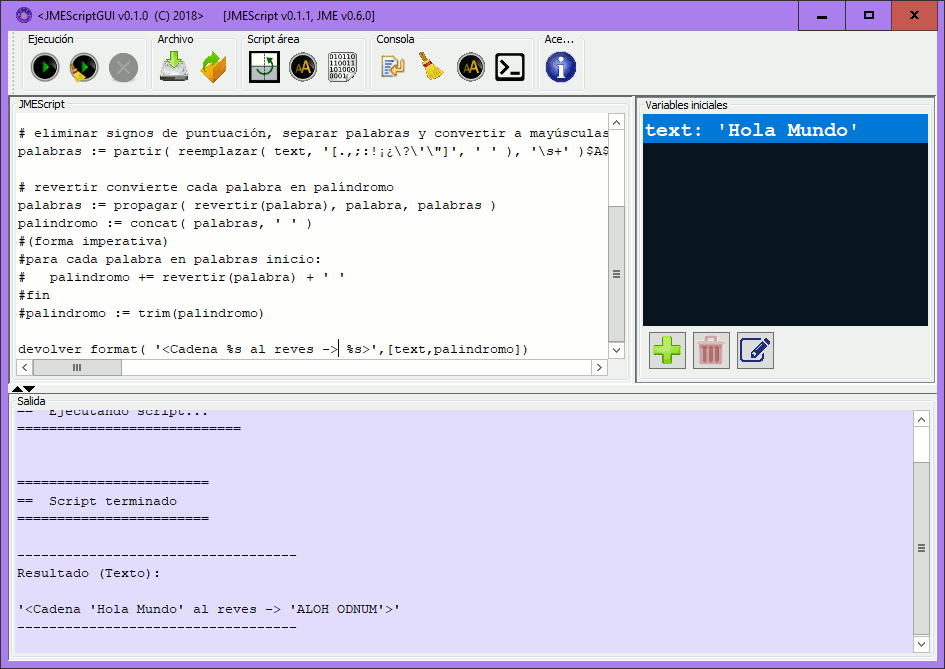
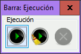
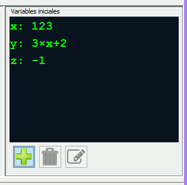
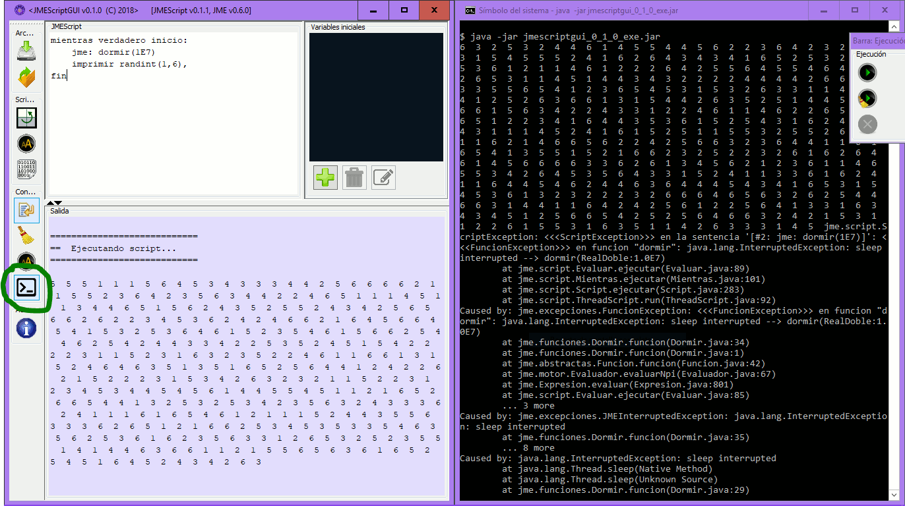
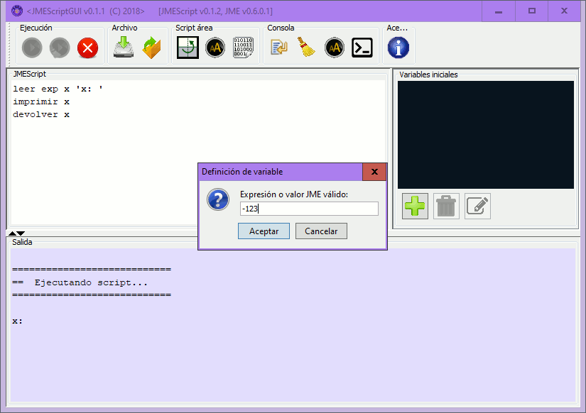
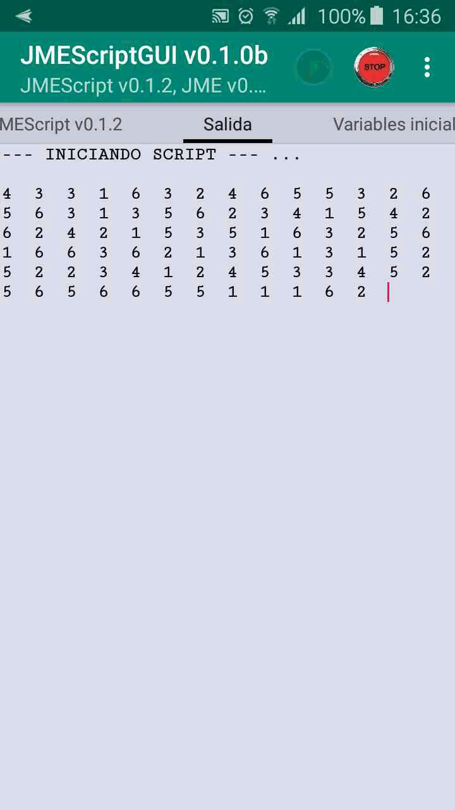
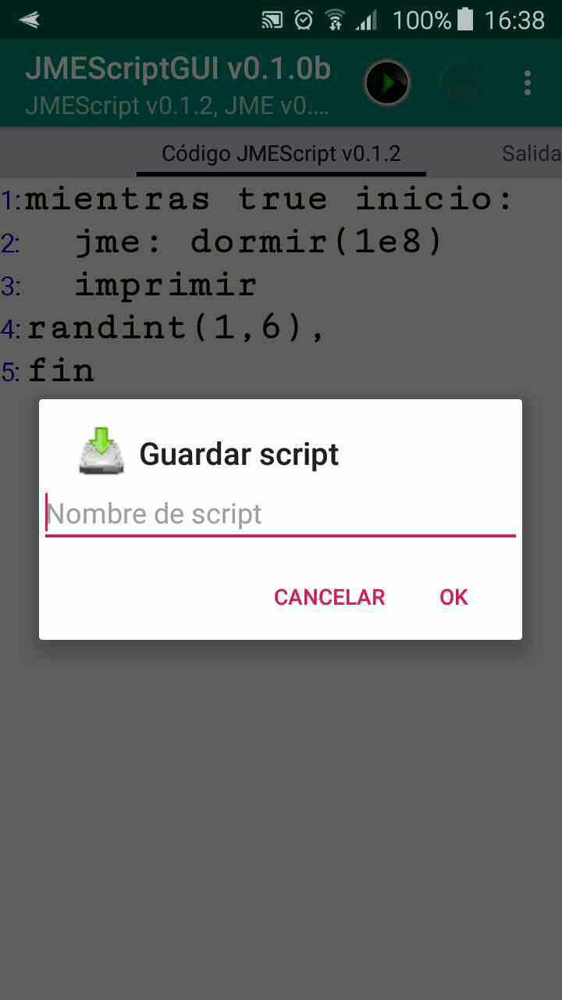

JMEScriptGUI es un pequeño entorno integrado de desarrollo (IDE) para la ejecución de scripts JMEScript, implementado en JAVA 8 y distribuido en jar ejecutable y código fuente, con licencia GPLv3 http://www.gnu.org/licenses/gpl-3.0.html.
Versión 0.1.2.0
jmescriptgui_0_1_2.jar <4MB Ejecutable
jmescriptgui_0_1_2_src.jar <0.3MB Código
Versión para Android 5+ (beta):
jmescriptgui_xxx_beta.apk <2MB App
JMEScriptGUI_AndroidStudio_src.rar <35MB App
Nota: la instrucción leer es ignorada en la versión Android
∎ Interfaz simple y autoexplicativo:

∎ Ejecución y Parada de scripts JMEScript:

∎ Establecimiento de mapa de variables iniciales:

∎ Salida por GUI o por terminal (si se arranca la aplicación desde uno):

∎ Entrada por diálogo de variable:

∎ Android app:
|  |  |
El editor permite guardar y cargar scripts, pero en la versión actual carece de sintaxis resaltada y características avanzadas de edición. Como se comenta en la sección de JMEScript, Puede utilizarse este descriptor de lenguaje definido por el usuario (UDL) para Notepad++ que permite usar la sintaxis resaltada para JMEScript, y pegar el código en el editor.